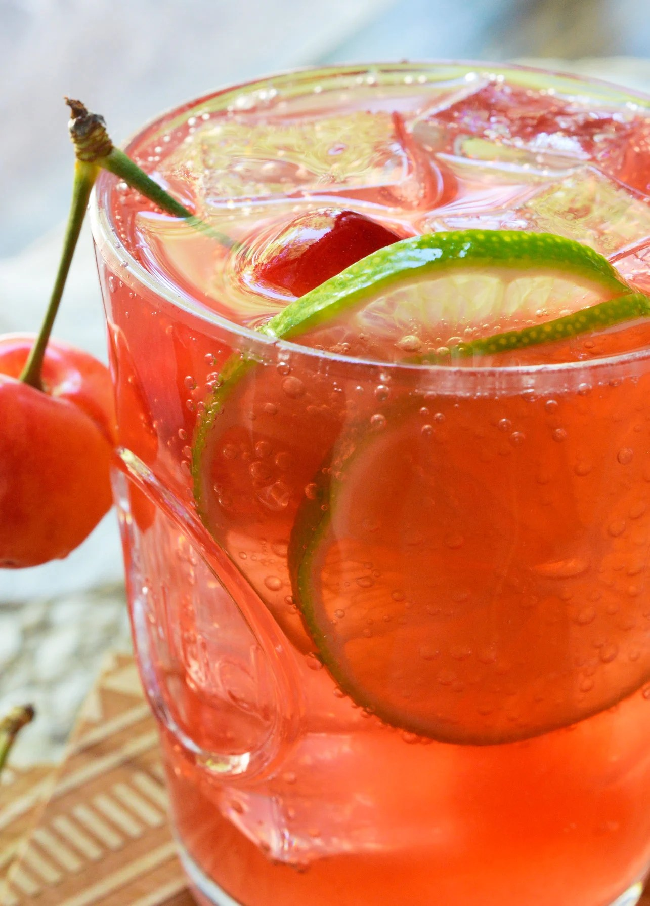

It seems like the year 2020 calls for drinks. . . lots of drinks. These tequila cocktails are great because they only require 4 ingredients. If you like fizzy sweet drinks then this is your kind of beverage. But not too sweet. Unlike many drinks that you get at bars or restaurants, these cocktails are not made with syrups. The sweetness comes from cherry juice and 7UP.
Fill glass with ice.
Pour over lime juice, cherry juice and tequila. Give it a stir. Finish with 7UP (approx 2-4 ounces).
Garnish with cherries and limes. (optional)